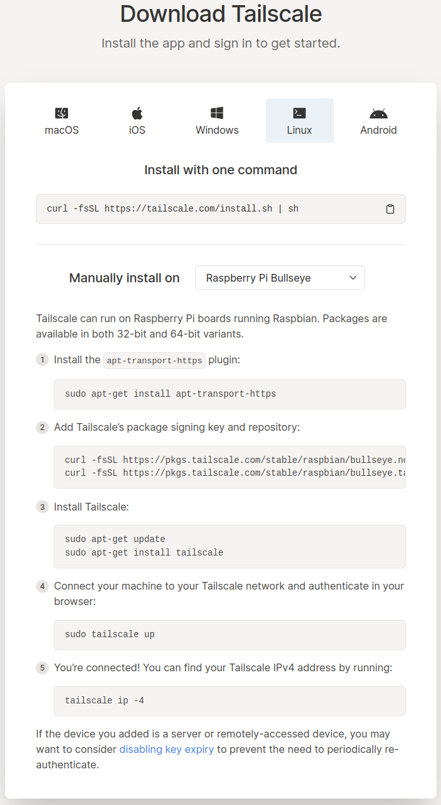
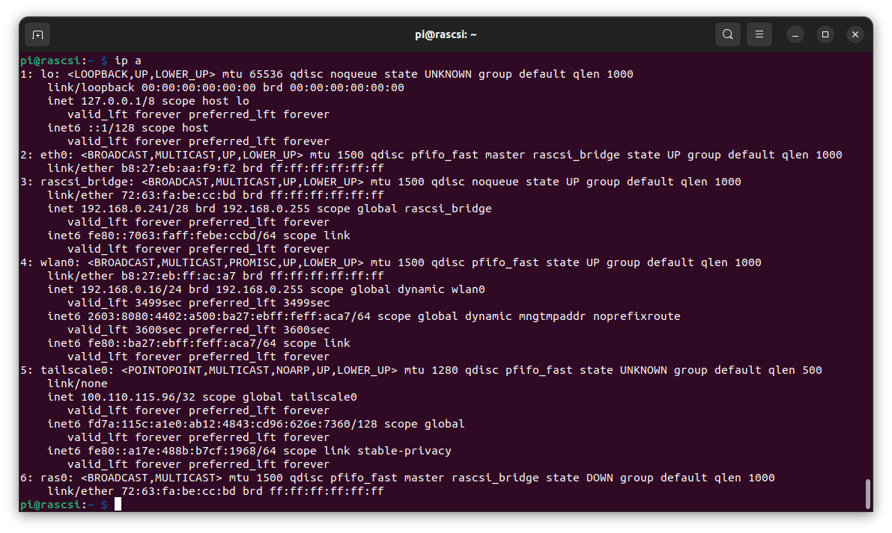
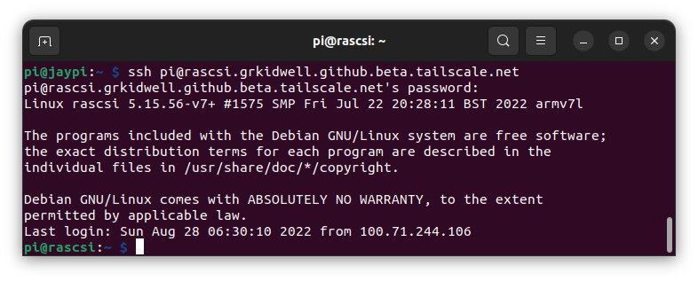
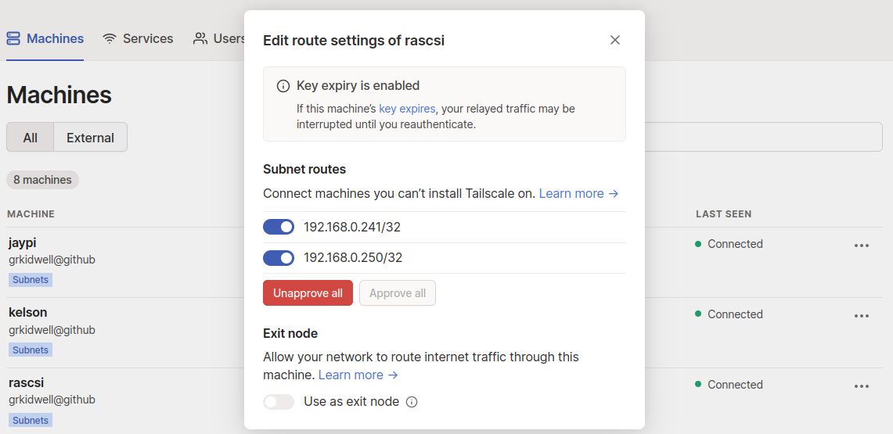
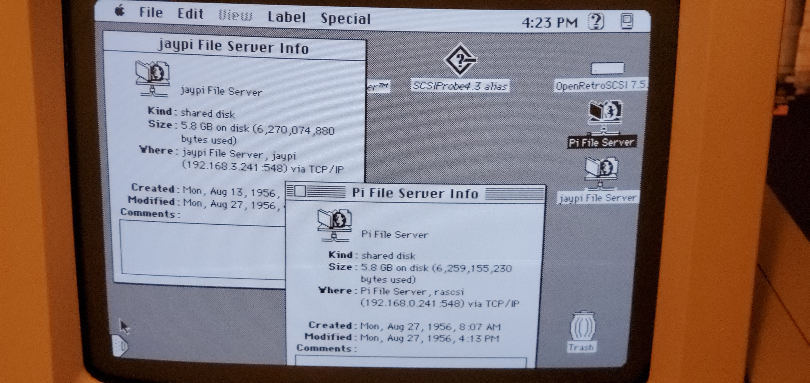
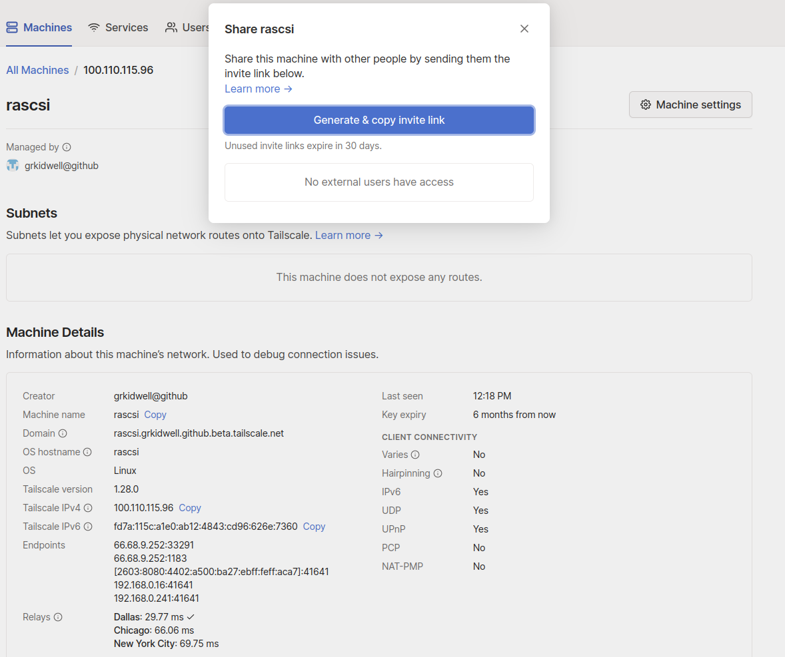

Tailscale VPN
Install
After creating a tailscale account, follow the Raspberry Pi Bullseye download instructions

Your pi now has a unique ip address that can be accessed by all devices in your private tailscale VPN.

This machine can also be accessed by its hostname through Tailscale's private DNS

Enable Subnets
Raspberry Pi
'Advertise routes' to provide access to the appleshare devices on this network and 'accept routes' to forward requests through the tailscale VPN to other remote devices
sudo tailscale up --advertise-routes=192.168.0.0/24 --accept-routes
Tailscale.com account
Select "Edit route settings" from the '3dots' menu on the right column and enable Subnet routes for this device

Mac Appleshare
The above "enable subnet" sequence was also done for the second RaSCSI "jaypi" device at 192.168.3.241. From the Chooser, go ahead and open this jaypi appleshare server

Tailscale sharing option
You can even share this machine with other Tailscale customers. There may be security concerns at exposing your network to others so be careful.
